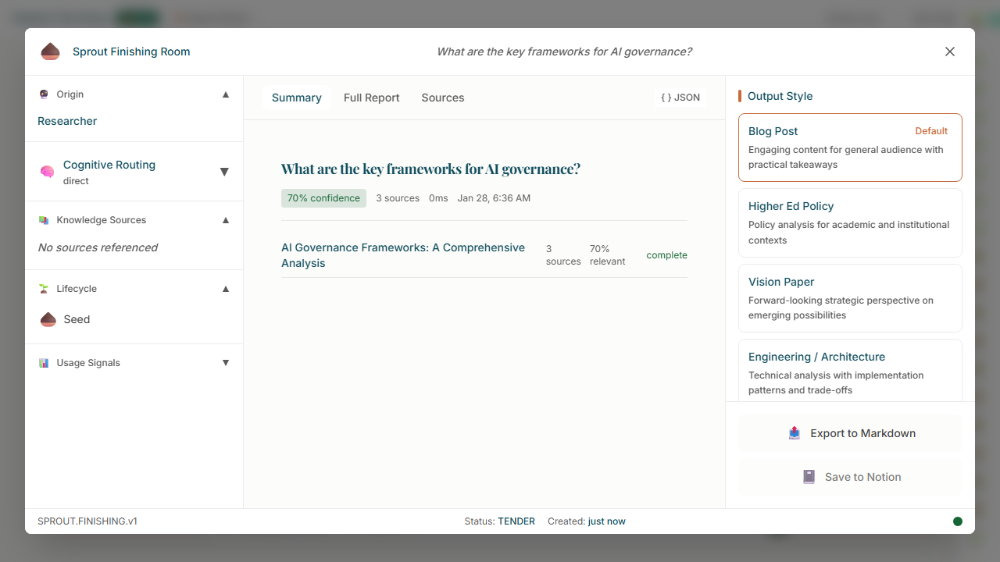
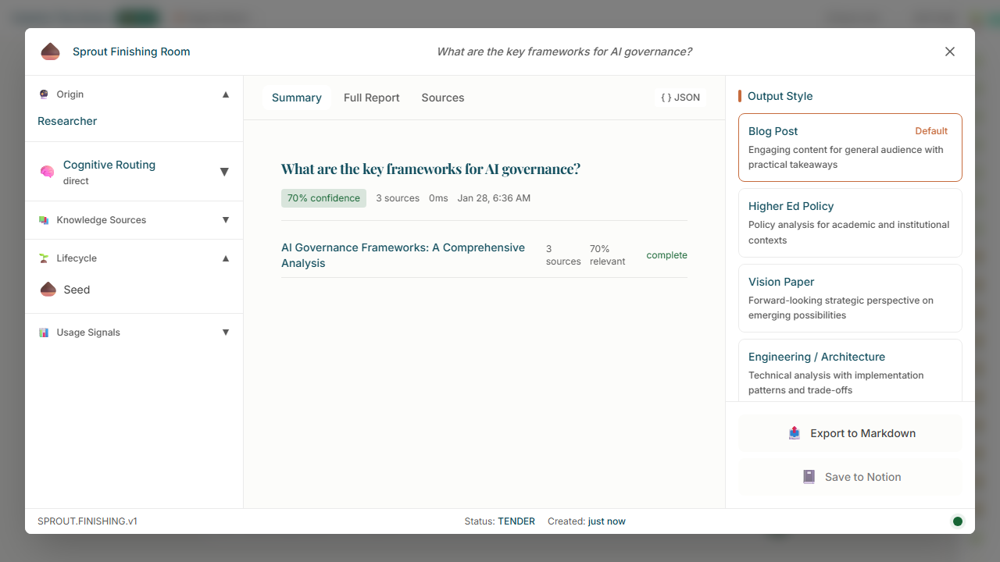

SFR Modal opens with three-column layout: ProvenancePanel (left), DocumentViewer with research tabs (center), ActionPanel with Writer workflow (right)

Full Report tab displaying canonical research sections: Executive Summary, Overview, EU AI Act, and more

Summary tab showing synthesis overview with confidence badge (70%) and branch completion status

Sources tab displaying citation metadata: 3 sources, 70% relevance, COMPLETE status

Feature gating: No version tab bar visible when no artifacts have been generated (zero regression)